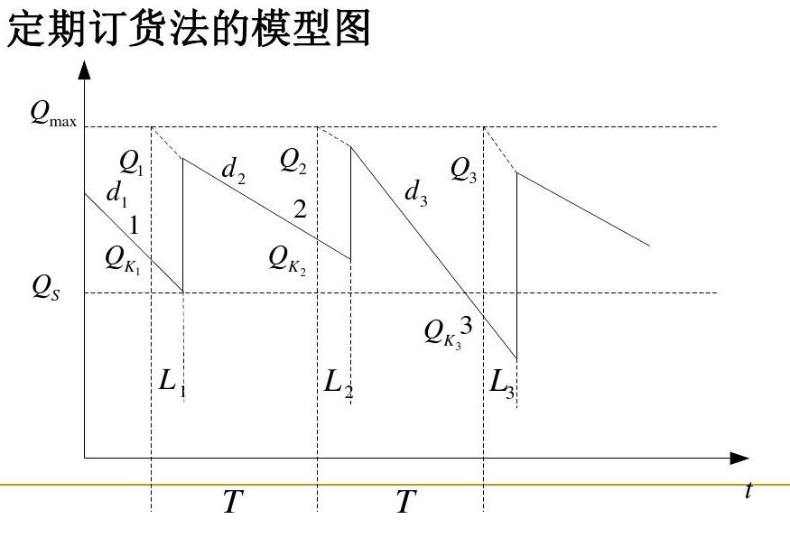
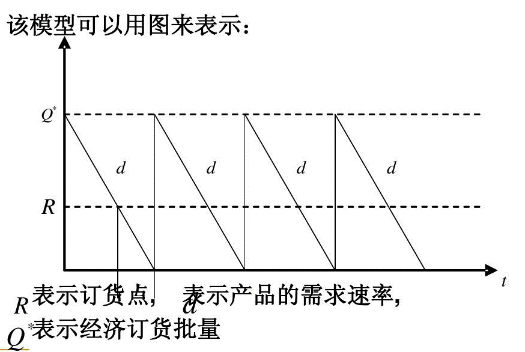
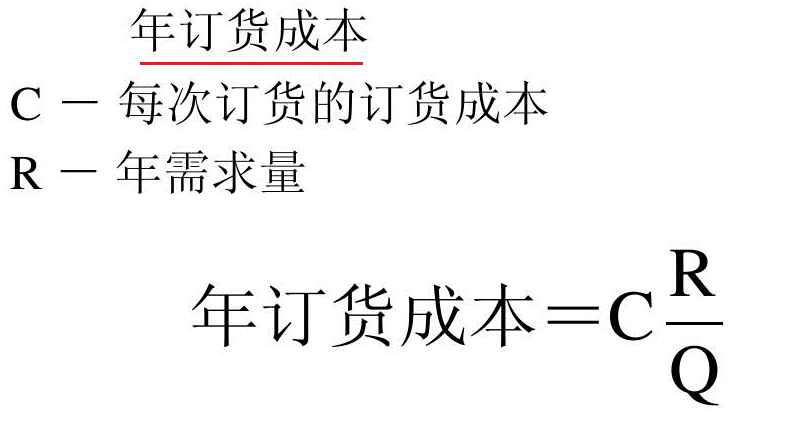
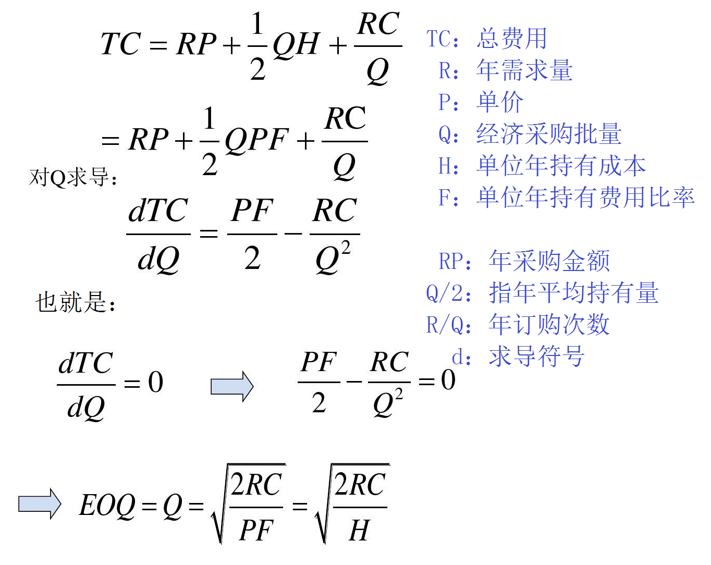

库存控制(Inventory Control)是对制造业或服务业生产、经营全过程的各种物品，产成品以及其他资源进行管理和控制，使其储备保持在经济合理的水平上。是在满足顾客服务要求的前提下通过对企业的库存水平进行控制，力求尽可能降低库存水平、提高物流系统的效率，以提高企业的市场竞争力。
1 库存控制原理
能影响库存量大小的只有订货、进货过程和销售供应过程。订货、进货过程使库存量增加，销售供应过程使库存量减少。要进行库存控制，既可以控制订货、进货过程，也可以控制销售出库过程，都能达到库存控制的目的。
2 采购订货策略
采购订货策略的基本内容包括三个方面： 确定订货点，即解决什么时候订货的问题。 确定订货批量，即解决一次订货多少合适的问 题。 确定订货如何具体实施，以及库存系统的安全库存的问题。
3 库存控制方法
定期库存管理——定期订货法
定量库存管理——定量订货法
3.1 定期订货法
定期订货法是指预先确定一个订 货周期T和一个最高库存量Q max。每隔一个固定的订货周期 T，检查库存一次，确定库存余额并发出订货，订货批量的大小为最高库存量 Q max与库存余额的差。定期订货法的两个核心的问题是如何确定订货周期 T 和最高库存量Q max，在降低总库存成本的同时，尽可能提高客户服务水平。
3.2 定量订货法采购
定量订货法又叫做连续订货法、订货点控制、 固定订货量系统，其原理是预先确定一个订货点，在日常管理中连续不断地监控库存水平， 当库存水平降低至订货点时，发出订货通知订货。这种库存控制方法必须连续不断地检查库存物品的库存数量，所以有时又称为连续库存检查控制法。

3.2.1 订货点的确定
在定量订货法中，当库存水平降到某个库存水平时就发出订货信息，我们将发出订货时的库存水平称为订货点。 影响订货点的确定的主要因素包括需求速率、订货提前期 、安全库存等。
在客户需求速率和订货提前期都稳定不变的情况下，不需要设置安全库存。此时
订货点 = 订货提前期 * 需求速率
在客户需求速率和订货提前期变化的情况下，需要设置安全库存，此时：
订货点 = (平均需求量 * 最大订货提前期) + 安全库存

3.2.2 经济订货批量的确定
所谓订货批量就是每一次订货的数量。订货批量的高低，不仅直接影响库存量和库存成本的高 低，而且直接影响货物供应的满足程度。订货批量大小的主要影响因素有两个：
需求速度，需求速率越高，订货批量就越大。
经营费用，费用的高低，对订货批量有影响，经营费用低，订货批量可能就大，反之，订货量就小。
3.2.2.1 经济订货批量的原理
经济订购批量（Economic Order Quantity, 简称EOQ）的原理是平衡订货成本、存储成 本，寻求使得包含采购成本、订货成本、存储成本在内的总库存成本最小的订货批量。
3.2.2.2 经济订货批量模型的假设
经济订货批量模型最早由F.W.Harris于1915年提出的，该模型有如下假设:
(1) 需求率已知，为常量。年需求量以D表示，单位时间需求率以d表示。
(2) 一次订货量无最大最小限制。
(3) 采购，运输均无价格折扣。
(4) 订货提前期已知，为常量。
(5) 订货费与订货批量无关。
(6) 维持库存费是库存量的线性函数。
(7) 补充率为无限大，全部订货一次交付。
(8) 不允许缺货。
(9) 采用固定量系统。
由于该模型假设了产品的需求速率和订货提前期是固定的，而且所订产品瞬时到货，因此，不需要安全库存。
3.2.2.3 经济订货批量的原理
基于以上假设，在简单EOQ模型中，我们只考虑采购成本、存货持有成本和订货成本。
（库存费用包括订货费、保管费、缺货费、补货费、进货费与购买费）
① 每单位年持有成本

② 年订货成本

③ 总成本
其中采购成本为R*P，其中R是年需求量、P为单价。

④ 年总成本曲线

⑤ 通过求导求经济订货批量EOQ

Q = SQRT(2*RC/H)
TC：总费用
R：年需求量
P：单价
Q：经济采购批量
H：单位年持有成本
F：单位年持有费用比率
RP：年采购金额
Q/2：指年平均持有量
R/Q：年订购次数
d：求导符号
⑥ 具体案例

－End－